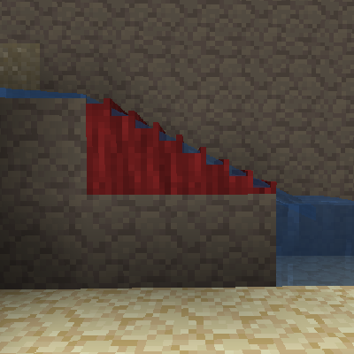
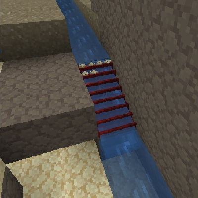

流し樋
流し樋
流し樋は鉱石が混ざった砂利である鉱床から金属のみを取り出す装置であり、ふるいと同じ様に機能しますが確率が異なります。
流し樋は棒と木材で作成できます。
流し樋を設置すると、2ブロックが占有されます。使うには水が内部を通って先端から流れ出る必要があります。流し樋は、内部で水が流れているように見えるときに正常に機能します。水を正しく流すには、水流の最後のブロックでなければなりません。水が先端から排出されるには、流し樋の先端には何もない空間が必要です。
水を適切に配置した流し樋。
流し樋を使用するには、水流を使って鉱床を流し桶に入れ込みます。入れ込まれたアイテムは見た目にも表示され、しばらくすると確率で加工されたアイテムが吐き出されます。
内部にアイテムが入った稼働中の流し樋。
ふるいで得られるもの
流し樋は、鉱石、小石、および宝石の3種類のアイテムが得られる可能性があります。確率は次のとおりです:
- 鉱石: 55%
- 小石: 22.5%
- 宝石: 0.9%
岩石の種類には、特定の宝石が含まれることがあり、それに応じて宝石が得られます。